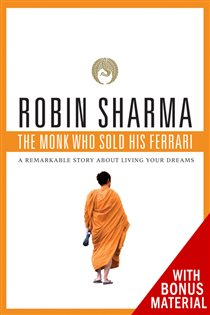

Library › Self-Improvement
The Monk Who Sold His Ferrari — Summary & Key Lessons

A fable about fulfilling your dreams and reaching your destiny — the seven virtues of enlightened living.
📖 OPEN THE FULL INTERACTIVE BREAKDOWN →🌐 Read it in Hindi, Hinglish, Gujarati, Tamil & 22 more languages — free, with audio.
💡 The Big Idea
Julian Mantle — millionaire litigator, Ferrari owner, heart-attack survivor — sells it all, treks to the Himalayas, and finds the Sages of Sivana, returning transformed to teach his old colleague John over one long night. The teaching is a memorable fable-within-the-fable: a garden (the mind — guard what enters it), a lighthouse (purpose — goals give life direction), a sumo wrestler (kaizen — constant self-improvement), a pink wire cable (discipline — small acts of will braided into unbreakable strength), a gold stopwatch (time — life's non-renewable currency), fragrant roses (service — the hand that gives roses keeps their scent), and a path of diamonds (live NOW — the journey is the destination). Seven images, seven virtues — a complete operating system delivered as a story you can't forget.
🧠 The 6 Key Lessons
Lesson 1: Master Your Mind: Tend the Garden
The Garden — Virtue 1
The mind is a garden: leave the gate open and the world dumps its garbage in — news panic, others' negativity, worry loops — and weeds strangle everything planted. The sages' discipline is gatekeeping plus cultivation: guard inputs ruthlessly ('stand guard at the gate of your garden and let in only the finest information'), and practice thought-replacement — the mind holds one thought at a time, so the skill isn't suppressing negatives but instantly substituting positives (opposition thinking). Worry is the garden's chief pest: Julian's statistic-as-parable — the vast majority of what we worry about never happens or can't be changed — reframes worry as squandered mental capital. Ten thousand thoughts a day, and most people think 95% of yesterday's: without deliberate tending, the garden replants its own weeds forever.
📖 Example: Julian teaches John the Heart of the Rose ritual: stare into a single rose in silence, returning attention to it each time the mind bolts — a beginner's meditation that lengthens focus like a muscle — and the Secret of the Lake, the sages' visualization… Read the full example →
⚡ Do this: Install a 10-minute daily 'garden hour' seed: one silent focus ritual (a rose, a candle, the breath) plus one gate-rule — pick a single input to ban for 30 days (doom-scroll, morning news). When a weed-thought appears, replace it mid-sentence with its opposite.
Lesson 2: Follow Your Purpose: The Lighthouse and the Five Rituals of Goals
The Lighthouse — Virtue 2
In the fable's garden stands a lighthouse: purpose. The sages held that the purpose of life is a life of purpose — happiness arrives as a by-product of pursuing meaningful aims, never from comfort itself. The machinery is concrete: know your calling (the thing that uses your gifts in service of others), then run goals through written clarity — the sages made Julian record goals because 'a goal not written is merely a wish' — with deadlines, public commitment's pressure, and the five-step method: form a clear mental image of the outcome, create positive pressure, set a timeline, apply the Magic Rule of 21 (new behaviors practiced daily for 21 days begin to root), and enjoy the process. Passion — the word Julian repeats most — is the fuel: purpose without passion is a lighthouse with no lamp.
📖 Example: Julian's own conversion is the exhibit: as a lawyer he had targets (verdicts, money, toys) but no purpose — 'I was rich in things and bankrupt in meaning' — and the heart attack was the audit. Among the sages he watched purpose operate at village scale:… Read the full example →
⚡ Do this: Write your lighthouse paragraph: the contribution that would make your life feel purposeful. Extract one 90-day goal from it, write it with a deadline, tell one person, and attach a 21-day daily ritual that advances it.
Lesson 3: Kaizen and Discipline: The Sumo Wrestler and the Pink Cable
The Sumo Wrestler & The Wire Cable — Virtues 3 and 4
From the lighthouse steps a nine-foot sumo wrestler: KAIZEN, constant and never-ending self-improvement. The sages' formula: do the things you fear, expand your comfort zone daily, and work on yourself through the Ten Rituals of Radiant Living (solitude, physicality, live nourishment, abundant knowledge, personal reflection, early awakening, music, spoken word/mantras, congruent character, simplicity). The sumo wears only a pink wire cable — DISCIPLINE: single wires are weak, but braided daily acts of will become unbreakable cable. Willpower is built like muscle, through progressive small defiance of impulse: silence-keeping, waking on the alarm, keeping micro-promises to yourself. Kaizen sets the direction; the cable supplies the force. Neither works alone — improvement without discipline is a hobby, and discipline without improvement is a treadmill.
📖 Example: The sages' training menu was calibrated escalation: cold-water baths, dawn practice, fasting days — not asceticism for its own sake but strength training for the will, each kept promise thickening the cable. Julian prescribes John the modern kit: rise at… Read the full example →
⚡ Do this: Choose your cable-builders: three tiny daily promises (alarm obeyed instantly, one feared task first, ten minutes of reading) kept for 21 days without exception. Add one comfort-zone breach weekly — the small brave act you've been rescheduling.
Lesson 4: Respect Your Time: The Gold Stopwatch
The Gold Stopwatch — Virtue 5
Across the garden the sumo trips on a gold stopwatch: TIME, the non-renewable currency. The sages — who lived without clocks — were history's fiercest time-realists: time slips like sand through fingers, and those who master it master their lives. The practices: plan the week and day in advance (the sages' 'ritual of the pre-dawn plan'), apply the 80/20 filter relentlessly (most results flow from a handful of priorities — protect them from the trivial many), have the courage to say NO (every yes to the unimportant is a theft from the vital), and practice deathbed mentality — living each day as if it could be the last redirects attention instantly to what matters. Procrastination's cure is the same lens: busy-ness is often sophisticated avoidance, and the courage to act simply IS time management at its root.
📖 Example: Julian's law-firm decades are the cautionary ledger: eighty-hour weeks that felt 'productive' while his marriage, health, and spirit quietly went into arrears — 'I was too busy earning a living to build a life.' The sages' counter-example: days that… Read the full example →
⚡ Do this: Sunday night: plan the week around your top three priorities BEFORE the calendar fills. Each morning, mark the day's single vital task and do it early. Practice one deliberate NO this week — and notice what the reclaimed hours buy.
Lesson 5: Serve Others and Live Now: The Roses and the Diamond Path
The Fragrant Roses & The Path of Diamonds — Virtues 6 and 7
The final images complete the garden: fresh ROSES — selfless service — because 'the hand that gives roses always retains some of the fragrance': the quality of your life ultimately comes down to the quality of your contribution, and daily small kindnesses compound into meaning no achievement matches. And the path of DIAMONDS: live in the now — the diamonds are underfoot the whole time; happiness deferred ('when I make partner, when the mortgage clears') is happiness forfeited, because the present is all anyone ever owns. Practices: practice daily acts of kindness without ledger, cultivate relationships as the true wealth, savor ordinary moments (a child's laugh, a meal, a walk) as the point rather than the interruption, and never sacrifice happiness for achievement — the fable's whole arc in one rule.
📖 Example: Julian's closing scene lands both virtues at once: the man who once measured days in billable hours now measures them in moments fully inhabited and people genuinely helped — and reports, without irony, being richer. The sages' community ran on the rose… Read the full example →
⚡ Do this: Do one anonymous act of service daily this week — no credit, no mention. And practice the diamond pause: three times a day, stop for thirty seconds and fully inhabit the moment you're in. The ladder can wait half a minute.
Lesson 6: Discipline Is the Bridge Between Goals and Accomplishment
The Secret of the Lake
The fable's monk teaches that nobody ever achieved lasting excellence without daily discipline — the unglamorous repetition of fundamentals. Sharma contrasts the excitement of starting with the quiet power of continuing. Inspiration gets you to the starting line; discipline carries you past the finish.
📖 Example: The successful doctor in the story had no exotic secret — he followed the same morning ritual for decades, rain or shine. His colleagues with equal talent but sporadic effort wondered at his luck; the monk's answer was simple: luck is what discipline looks… Read the full example →
⚡ Do this: Choose one daily non-negotiable ritual (exercise, reading, meditation) and keep it for 30 days without exceptions.
✅ 5-Step Action Plan
- Tend the garden: daily focus ritual plus one banned input for 30 days.
- Write the lighthouse paragraph; extract a 90-day goal with a 21-day ritual.
- Braid the cable: three micro-promises kept daily, one comfort-zone breach weekly.
- Plan weeks around the vital few; deploy one courageous NO.
- One anonymous kindness and three diamond pauses per day.
⚠️ When This Doesn't Work
Sharma's blend of spirituality and wealth is seductive — and it is the exact recipe Subrata Roy used to build Sahara: faith in a leader, promises of return, and millions of small believers whose money was never quite where it should be. When spirituality becomes a sales pitch, the followers stop checking and the checking is the whole point. The book's message — balance material and inner life — is sound; just remember that anyone mixing God and your money deserves your coldest audit.
💀 The Graveyard Proves It
🏦 Subrata Roy — The Empire That Fought the Referee. Burn: ₹24,000 crore ordered refunded, 2 years in jail. Read the full case study →
💬 Best Quotes from The Monk Who Sold His Ferrari
- “The mind is a wonderful servant but a terrible master.”
- “Everything is created twice: first in the mind and then in reality.”
- “Never overlook the power of simplicity.”
Interactive version: mark lessons as read, listen in your language, share quote cards.